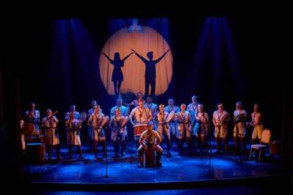
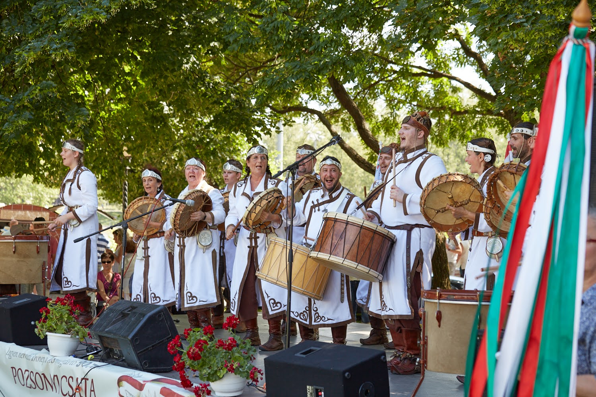

2026. szeptember 27.
Bemutató óra — A magyarok eredete
- Kik voltak őseink?
- Sztyeppei életmód, jurta, lovas népek
- A sárkányok
- Rovásírás
Játékos, élményalapú út a magyar néphagyományba — közös dobolással, népi ritmusokkal, történetekkel, énekkel és mozgással.
A magyar néphagyomány egyik legősibb szimbóluma a Világfa. A mesék sárkánya a természet erejének, a bátorságnak és az őrzésnek a jelképe. A Világfa Sárkányai azok a gyermekek, akik közösen őrzik hagyományainkat, miközben saját közösséget építenek.
Őseink öröksége és a népi hagyomány.
Mi, akik ma tovább visszük a ritmust és a közösséget.
A gyermekek, akik új ágakat növesztenek.

A Regélő Fehér Táltos Hagyományőrző Egyesület Dobcsapata 2007-ben alakult. Önkéntes közösségünk célja a magyar kulturális örökség, a hagyományok és a magyarságtudat ápolása és továbbadása, valamint az őseinktől örökölt értékek megismertetése a következő generációkkal.
Előadásainkon a dobolás, az ének, a korhű viselet és a magyar mondavilág segítségével idézzük meg múltunkat. Rendszeresen veszünk részt magyarországi és határon túli hagyományőrző rendezvényeken, köztük a Kurultájon és az Ősök Napján is.
Dobcsapatunk politikától és vallási hovatartozástól független csapat.
Hiszünk abban, hogy a hagyomány akkor marad élő, ha a gyermekek nemcsak megismerik, hanem közösen át is élik.


Hupczik Andrea, informatikatanár és felnőttképzési oktató, többéves pedagógiai és vállalati tapasztalattal. 2007 óta a Regélő Fehér Táltos Dobcsapat tagjaként számára különösen fontos a magyar kultúra, a hagyományok és a közösségi értékek továbbadása a következő generációnak.
Mellé a csapatból minden alkalomra Bécsbe utazna 4 felnőtt dobos, hogy együtt vezessék a foglalkozást és hogy mindenkire elég figyelem jusson.
A tagok között van képzett énektanár, kórusvezető, aki általános iskolában tanít. Van, aki a mozgásért, ritmusoktatásért felel. Így mindenki a saját területén tud hozzájárulni a csapat fejlődéséhez.

A foglalkozásokon természetes bőrből és fából készült dobokat használunk. Minden hangszer másképp szól, a gyerekek pedig megtapasztalják a közös ritmus és az egyedi hang kapcsolatát.

Előzetes zenei tudás nem szükséges.
Egyszerű ritmusgyakorlatok, ritmusok utánzása és közös dobolás.
A történethez vagy témakörhöz illeszkedő dal megismerése, közös eléneklése és dobolása.
A történethez kapcsolódó mozgásos, dramatikus vagy közösségi játékok.
Csodaszarvas, Hunor és Magor, Attila, Emese álma, Álmos, Árpád, a hét vezér és a honfoglalás mondái.
Hiszünk abban, hogy a hagyomány akkor marad élő, ha a gyermekek nemcsak megismerik, hanem közösen át is élik.
Havi egy alkalommal, szombaton délután találkozunk, 2 órás foglalkozásra. Az első bemutató alkalom 2026. szeptember 27-én lesz. A féléves hozzájárulási díj 70 EUR / fő.
Egy-egy alkalom főbb részei: mese vagy monda, dobos dal, szimbólumok megismerése, ritmus és dobolás, mozgás és játék, valamint szünet.
A legutóbbi fellépésünk után örömmel tapasztaltuk, hogy nemcsak a gyermekek, hanem a szülők és más érdeklődők is szívesen kipróbálták a közös dobolást. Ezért a gyermekfoglalkozások mellett szeretnénk egy olyan programot is kínálni, amelyhez kortól és előképzettségtől függetlenül bárki csatlakozhat.
A gyermekfoglalkozást követően egy másfél órás, kötetlen közös dobolást és zenélést tartunk, ahol a hangsúly az együtt zenélés örömén és a közösségi élményen van. Könnyen megtanulható dobos dalokat, ritmusokat és közismert magyar népdalokat tanulunk, együtt dobolunk és énekelünk.
A programra felnőtteket, fiatalokat, szülőket és gyermekeket egyaránt várunk. A célunk, hogy létrejöjjön egy olyan nyitott közösségi alkalom, ahol a magyar zene, a ritmus, az éneklés és a közös dobolás, zenélés összehozza a generációkat.
Zenei vagy dobos előképzettség nem szükséges. Hangszereket lehet hozni.
Részvételi díj: 5 EUR / fő. Az előtte lévő dobos foglalkozáson résztvevő gyerekeknek ingyenes.
